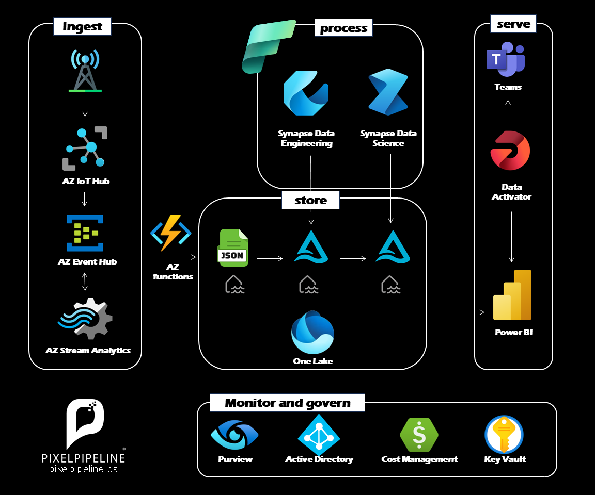

Detecting Anomalies in IoT Telemetry
Transforming Raw Streams into Intelligent Action with Microsoft Fabric

The Architecture: An Intelligent Ecosystem
This project showcases a unified, end-to-end data intelligence ecosystem built on Microsoft Fabric. We've replaced fragmented silos with a seamless flow that transforms high-velocity IoT telemetry into real-time business insights.
High-Velocity Ingestion
Everything begins at the edge. IoT sensors beam telemetry into Azure IoT Hub, our secure enterprise gateway. Azure Event Hubs and Stream Analytics work in tandem to capture data in motion, ensuring zero loss even at extreme scales.
Serverless Orchestration
Azure Functions serve as the connective tissue of the pipeline. These serverless microservices pre-process raw JSON streams, ensuring data is cleaned, validated, and formatted before it ever touches our storage layer.
The Unified Lakehouse (OneLake)
At the center lies Microsoft Fabric's OneLake. We implement a robust Medallion Architecture: Raw data lands in Bronze, is refined into schema-validated Silver, and finally aggregated into business-ready Gold datasets. All stored using the open Delta format for maximum performance and interoperability.
Advanced AI & Engineering
Synapse Data Engineering handles the heavy lifting of large-scale transformations. Meanwhile, Synapse Data Science deploys machine learning models directly onto the Lakehouse, identifying anomalies and trends before they become critical issues.
Intelligent Serving & Action
Insight is only valuable if it leads to action. Power BI provides live executive dashboards, while Data Activator acts as an automated sentinel, triggering instant alerts in Microsoft Teams the moment a threshold is breached.
Enterprise-Grade Governance
This isn't just a pipeline; it's a secure environment. The entire flow is governed by Microsoft Purview, protected by Azure Active Directory, and secured via Key Vault, ensuring compliance and data integrity at every step.